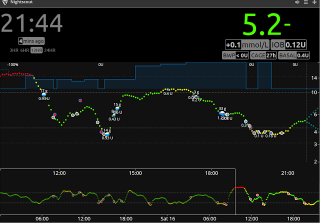

Open Source Tools To Manage Diabetes
The Maker Movement & Open Data Analysis

What Is Diabetes Mellitus?
Dafynition: Diabetes Mellitus
Diabetes mellitus type 1 (also known as type 1 diabetes, or T1D; formerly juvenile diabetes). Caused by the autoimmune destruction of the insulin-producing beta cells in the pancreas which leads to increased glucose in blood and urine. Classical symptoms are polyuria (frequent urination), polydipsia (increased thirst), polyphagia (increased hunger) and weight loss.
The cause of diabetes mellitus type 1 is unknown. Type 1 diabetes can be distinguished from type 2 by autoantibody testing. The C-peptide assay, which measures endogenous insulin production, can also be used.
Administration of insulin is essential for survival and must be continued indefinitely. T1Ds are trained to independently manage their diabetes which can be challenging.
Acute complications include diabetic ketoacidosis and nonketotic hyperosmolar coma. Serious long-term complications related to high blood sugar include heart disease, stroke, kidney failure, foot ulcers and damage to the eyes. Other complications may arise from low blood sugar caused by excessive insulin treatment.
Diabetes mellitus type 1 accounts for between 5% and 10% of all diabetes cases. Within the United States the number of affected persons is estimated at one to three million. There are 8-17 new cases per 100,000 per year in the US.
Homeostasis
- The property of a system in which variables are regulated so that internal conditions remain stable and relatively constant
- A constant challenge for a T1D
- 100 years ago, almost always fatal in childhood
- Today, a manageable condition, thanks to technology
Technology!
- Evolved over a billion years ago, roughly
- Pancreas producing cells discovered: 1869
- Role of pancreas in digestion understood: 1889
- Diagnostic criteria for diabetes mellitus: 1901
- Experiments with treatment: 1906 - 1921 (efforts interrupted by WW1)
-
First actual treatment: 1922
While not typically remembered today, the isolation and medical utilization of insulin was widely seen as a medical miracle at the time - Insulin Pump: Invented in 1963 as a backpack.
- Karen started wearing her pump in ~1997
- Karen started wearing her CGM in ~2013
Hardware!
Medtronic Revel Pump
Dexcom G4 Share
Information Technology!
- More information == better diabetes management
- The pump delivers the medicine
- The CGM helps us manage the pump
-
This is life changing technology
- With greater complexity, more chances for failure
- Interstitial fluid readings are a lagging indicator of blood glucose levels
But . . .
- More info == Better diabetes management
- Wouldn't it be great to have this on . . . a watch?
- No standard communications interface
- CGM data only available on phones / watches
- End users do not control their own data
#WeAreNotWaiting
The Following Awesome Is Not
Approved
#WeAreNotWaiting
The Maker Movement meets medical necessity.
Nightscout was developed by parents of children with T1D and is developed, maintained, and supported by volunteers.
Today, Nightscout is available for Dexcom G4, Dexcom Share with Android, Dexcom Share with iOS, and Medtronic.
The goal of the project is to allow remote monitoring of a T1D’s glucose level using existing monitoring devices.
#WeAreNotWaiting
Not trivial to set up . . . .
xDrip:
Nightscout:
Damned Well Worth It: 1/4
Damned Well Worth It: 2/4
Damned Well Worth It: 3/4
Damned Well Worth It: 4/4
Time 4 A Live Demo!
Technical Difficulties
- Karen's CGM Transmitter died this weekend
- Insurance won't allow us to have a spare, so we are waiting for the replacement
- Keeping this hardware/software stack running is a MASSIVE PITA
- It is also beyond the capacity of many families with a T1D
- Do they love their family member(s) any less than I do?
-
We should be up and running by the end of the week
- And that's cool, but we need this TODAY
- Did I mention we are six months pregnant?
Let's Look At Some Numbers1/3
Let's Look At Some Numbers 2/3
Let's Look At Some Numbers 3/3
Andy: Time to use emacs!

Should we have access to this data?
- HIPAA
- We can ask our doctor for medical records. Why not our hardware vendors?
- Shouldn't we, as end users, have the right to do what we want with this data?
Thank You!
- Produced using Reveal.js &
Presented on a Surface Pro 3, running Fedora 24 -
By IntDiabetesFed - International Diabetes Federation (IDF).
IDF holds all rights to the use of the blue circle for diabetes.,
Public Domain, https://commons.wikimedia.org/w/index.php?curid=2983689 -
Medtronic Revel Pump:
http://www.medtronicdiabetes.com/products/minimed-revel-insulin-pump -
Dexcom G4 w/ Share:
http://www.dexcom.com/dexcom-g4-platinum-share -
Nightscout Project:
http://www.nightscout.info/ -
xDrip:
http://stephenblackwasalreadytaken.github.io/xDrip/
Return To Presentation index.html